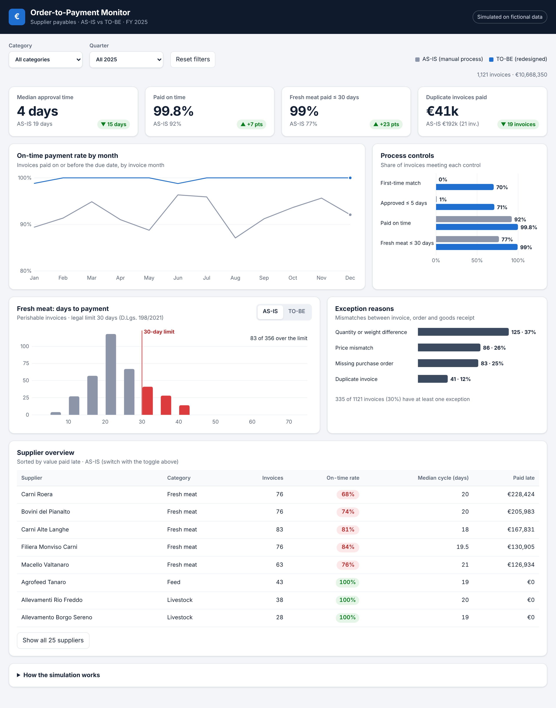
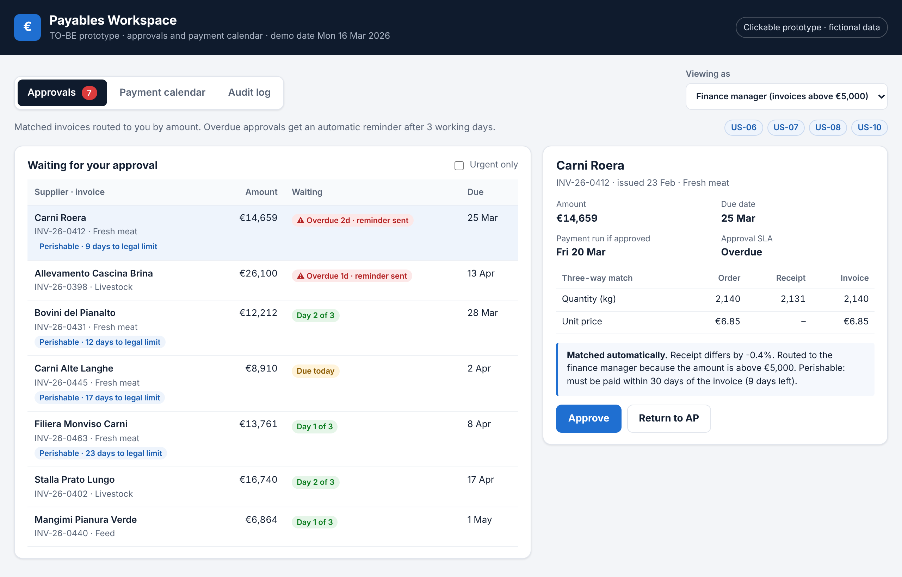

BUSINESS ANALYSIS · PROCESS REDESIGN · REQUIREMENTS
From Order to Payment.
An end-to-end analysis of how a mid-sized food company receives, checks, approves and pays supplier invoices, and a redesigned process that pays every correct invoice on time.
A food company where paying late is a compliance problem.
The case is set in a fictional Italian meat processor that supplies large retail chains. It works with about 25 suppliers (livestock, fresh meat, feed, packaging, logistics and services) and receives around 100 supplier invoices a month.
- Perishable goodsItalian Legislative Decree 198/2021 treats payment beyond 30 days for perishable agri-food products (60 days for other agri-food products) as an unfair commercial practice.
- E-invoicingSince 2019, B2B invoices in Italy arrive as XML through the SDI exchange system; some suppliers also send PDF copies.
- ScopeFrom purchase order to payment and supplier communication. Supplier selection, accounting entries and bank integration are out of scope.
Fictional company, process and data. The AS-IS describes a typical order-to-payment process, not a documented process of a real company. The topic is inspired by my summer internships in a veal supply-chain company, where I monitored invoices, payments and deadlines.
Pay every correct invoice on time, and nothing twice.
Today invoices are matched to orders and delivery notes by hand, approvals wait in email inboxes and due dates live in a spreadsheet. The company cannot see what it owes and when, some fresh-meat invoices are paid late, and suppliers call to ask about payment status.
- On timePay correct invoices by their due date, and perishable invoices within 30 days.
- In controlCatch price, quantity and duplicate errors before payment, not after.
- VisibleGive finance a weekly view of upcoming payments and the cash they require.
- MeasuredTrack cycle time, on-time rate and exceptions so problems surface early.
Seven groups, one shared invoice.
| Stakeholder | Needs | Pain today |
|---|---|---|
| Purchasing manager | Know whether invoices match what was ordered | Hears about discrepancies days later, by email |
| Warehouse / quality | A quick way to record weight and quality differences | Notes on paper delivery notes get lost |
| Accounts payable clerk | Order, receipt and invoice in one place | Manual matching, chasing approvals, supplier calls |
| Finance manager | A weekly view of what is due and the cash needed | No reliable forecast of upcoming payments |
| General management | No late payments on perishable goods | Learns about problems from suppliers |
| Suppliers | Be paid on time and know the status | Have to call to find out when they will be paid |
| IT / ERP owner | Changes that fit the existing ERP | Requests arrive without clear requirements |
RACI for the redesigned process
| Activity | Purch. | Wareh. | AP | Finance | Mgmt |
|---|---|---|---|---|---|
| Record purchase order | R/A | I | I | ||
| Record goods receipt | I | R/A | I | ||
| Three-way match and exceptions | C | C | R | A | |
| Approve invoice | R ≤ €5k | I | A > €5k | ||
| Weekly payment proposal | R | A | I | ||
| KPI review | C | C | C | R | A |
R responsible · A accountable · C consulted · I informed
AS-IS and TO-BE, step by step.
Both maps use BPMN notation with one lane per role. Switch between them and select a highlighted step to see the problem it causes today, or how the redesign fixes it.
Gap analysis
| Area | AS-IS | TO-BE | Change needed |
|---|---|---|---|
| Data | Spreadsheets and paper | ERP records for order, receipt and invoice | ERP purchase module, tablet at the warehouse |
| Control | Manual comparison | Rule-based match with tolerances | Agree tolerance rules with finance |
| Ownership | Implicit | RACI, thresholds and SLA | Approval policy signed off |
| Planning | Weekly list built from memory | Payment calendar and cash forecast | Payment terms stored per supplier |
| Communication | Phone and email | Automatic notifications | Clean supplier contact data |
What the solution must do.
Sixteen functional requirements, prioritised with MoSCoW and traced to the pain points (P1–P8) they address, plus five non-functional requirements.
Non-functional requirements
- Audit trailEvery approval and payment decision is logged with user and timestamp.
- Human in controlNo invoice is paid without a human approval.
- AccessRole-based access: warehouse users cannot see payment data.
- UsabilityA goods receipt takes less than one minute to record on a tablet.
- FreshnessDashboard data is refreshed at least daily.
Ten stories in four epics.
Open a story to read its acceptance criteria.
How success is measured.
| KPI | Formula | Target |
|---|---|---|
| Invoice cycle time | median(approval date − receipt date) | ≤ 5 days |
| On-time payment rate | paid on or before due date ÷ paid | ≥ 95% |
| Perishable compliance | perishable paid ≤ 30 days ÷ perishable paid | 100% |
| First-time match rate | matched with no manual step ÷ received | ≥ 70% |
| Approval SLA compliance | approved within 3 working days ÷ approved | ≥ 90% |
| Exception mix | exceptions by reason ÷ all exceptions | monitor |
| Overdue payables | sum of unpaid invoices past due | trend to 0 |
Targets are proposals to discuss with finance, not measured results.
The same invoices, before and after.
I generated 1,121 fictional invoices for 2025 with Python and ran each one through two simulated processes: the manual AS-IS and the redesigned TO-BE. Invoices, amounts and exceptions are identical in both; only the process rules change.

Open the interactive dashboard ↗Simulated on fictional data. The scenario rules (matching time, approval delays, payment runs) are stated assumptions, listed in the dashboard and the dataset README. They show the mechanism of the redesign, not a measured saving.
What the approver would see.
A clickable front-end of two TO-BE screens, built from the user stories. The approval inbox routes invoices by amount, shows the three-way match and flags SLA and perishable deadlines. The payment calendar groups approved invoices into Friday runs with the cash each one needs. Approving an invoice moves it into the calendar and writes to an audit log.

Try the prototype ↗- CoversUS-06 approval threshold, US-07 SLA reminder, US-08 perishable flag, US-09 weekly payment proposal, US-10 supplier notice, NFR-01 audit trail.
- Not coveredGoods receipt and the exception queue (InvoiceFlow shows a version of the queue). No back end: data is fictional and resets on reload.
How this connects to InvoiceFlow.
In the TO-BE, PDF-only invoices pass an intake check before the three-way match. That single step is what my InvoiceFlow prototype automates. This case looks at the whole process around it.
What this case does not prove.
- No real dataResults come from a simulation with stated assumptions, not from a company.
- Not validatedRequirements and targets would need to be checked in interviews with finance, purchasing and the warehouse.
- Next stepsValidate the AS-IS with users, estimate the ERP change effort, and pilot the three-way match on one supplier category.